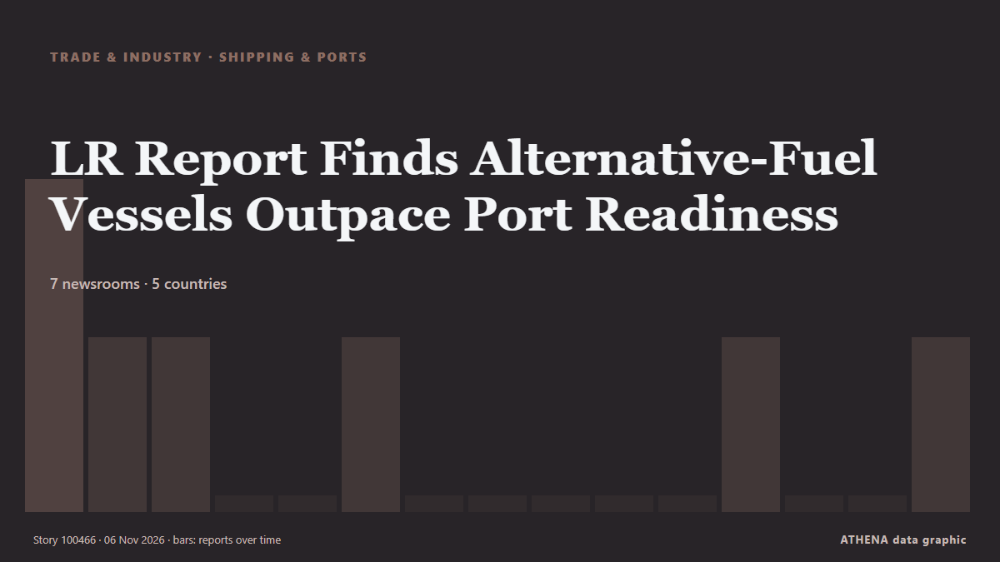

Schifffahrt und Häfen
GesponsertPräsentiert von  Cybernetics and Artificial Intelligence Lab Welcome to the Cybernetics and Artificial Intelligence Laboratory, established at the Department of Business Administration of the National and Kapodistrian University of Athens. The lab is headed by Professor Dimitrios Thomakos. The lab aims to do research that can be published in top venues. Our research uses tools and methods of Artificial Intelligence, and lies in the following areas: - Forecasting - Decision making - Cyber security - Finance We are always looking forward to collaborating with exceptional students!
Cybernetics and Artificial Intelligence Lab Welcome to the Cybernetics and Artificial Intelligence Laboratory, established at the Department of Business Administration of the National and Kapodistrian University of Athens. The lab is headed by Professor Dimitrios Thomakos. The lab aims to do research that can be published in top venues. Our research uses tools and methods of Artificial Intelligence, and lies in the following areas: - Forecasting - Decision making - Cyber security - Finance We are always looking forward to collaborating with exceptional students!
| 24. Okt. | 0 |
|---|---|
| 25. Okt. | 0 |
| 26. Okt. | 1 |
| 27. Okt. | 0 |
| 28. Okt. | 0 |
| 29. Okt. | 0 |
| 30. Okt. | 0 |
| 31. Okt. | 0 |
| 1. Nov. | 2 |
| 2. Nov. | 7 |
| 3. Nov. | 4 |
| 4. Nov. | 3 |
| 5. Nov. | 6 |
| 6. Nov. | 0 |
Schlagzeilen werden auf Englisch angezeigt, wie veröffentlicht.

LR Report Finds Alternative-Fuel Vessels Outpace Port Readiness
Alternative-fuel vessel orders are outpacing the development of the port infrastructure needed to support them, according to a new global study by Lloyd’s Register (LR)… von Maritime Professional
Iran protests IMO’s biased reports on shipping security
London, IRNA – The Islamic Republic of Iran has criticized the International Maritime Organization (IMO) biased reports on the shipping crisis, stressing that seafarer protection should not be… von IRNA (English)
Iran's IRGC says two tankers and tugboat caught fire in Strait of Hormuz
Iran’s Islamic Revolutionary Guard Corps said on Thursday that two oil tankers and a tugboat had caught fire in separate incidents after attempting to use unauthorised routes through the Strait of… von Business Recorder
India joins ISF Verify initiative for digital seafarer certification
India has joined the ISF Verify initiative, marking a significant step towards the wider adoption of digital seafarer certification across the global shipping industry. von Container News
Iran's IRGC says two tankers and tugboat caught fire in Strait of Hormuz
Iran's Islamic Revolutionary Guard Corps said on Thursday that two oil tankers and a tugboat had caught fire in separate incidents after attempting to use unauthorised routes... von Oman Observer
Israeli cruise ship Crown Iris left Syros island after a false bomb threat
Coast Guard cites potential threats to public order, island’s economy. von Anadolu Agency (English)
Iran’s IRGC says four tankers destroyed after hitting mines near Strait of Hormuz
Coalition says it destroyed two ballistic missile launchers The Coalition has released footage it says shows the targeting and destruction of two ballistic missile launch platforms. von Gulf News
Tanker Struck by Two Unidentified Projectiles Off Qatar Coast
DOHA, Nov 5 : A tanker has been struck by two unidentified projectiles in waters approximately 50 nautical miles north of Madinat ash Shamal, Qatar, according to the United Kingdom... von Arab Times
Windward expands into Maritime Visual Intelligence with acquisition of Azimut.ai
The newly added sensing layer identifies and fingerprints vessels in real time at maritime chokepoints and ports, enabling the visibility. von Cyprus Shipping News
Chile maintains environmental approval for San Antonio Outer Port
Chile’s Committee of Ministers has maintained the favourable environmental approval for the US$4 billion San Antonio Outer Port project. von Container News
NAVTOR introduces real-time AIS streaming in NavFleet platform
Maritime technology company NAVTOR has introduced real-time AIS streaming to its NavFleet platform, allowing fleet managers to monitor vessel positions, movements and surrounding traffic with minimal… von MarineLink
Cosco Shipping Ports sees steady volume growth in Q3
The Chinese port operator has maintained revenue growth amid global trade disruption. von Seatrade Maritime
Somali Pirates Hijack Iranian Dhow, Marking Fourth Off Somalia in 2026
On October 29, 2026, a Somali Pirate Action Group of 12 armed pirates hijacked the Iranian fishing dhow AZINI approximately 185 nautical miles east of Bandarbeyla, Puntland. von MarineLink
International Transport Employees Federation Formed In India To Protect Seafarer Rights
Indian maritime unions and welfare groups establish ITEF in Chennai to strengthen seafarers’ rights, safety and welfare. von Marine Insight
‘World’s first three ammonia-fuelled Capesize bulk carriers’ named at ceremony in China
A naming ceremony for what Mitsui O.S.K. von Ship.Energy
DP World strengthens China–Africa corridor with new shipping link
The China Africa Link strengthens maritime connections between the Far East and Africa, supporting more flexible supply chains and access. von Cyprus Shipping News
Tanker hit by two unknown projectiles off Oman, UKMTO says
The location of the latest strike matters most for oil. von investingLive (ForexLive)
KONGSBERG expands underwater surveillance technology for port security
KONGSBERG has launched two new sonar systems designed to improve underwater surveillance, navigation and the protection of critical maritime infrastructure. von Container News
US Strikes Iranian Targets in the Strait of Hormuz, Official Says
The drop reflects traders trimming some of the geopolitical premium built into crude in recent weeks rather than any change in physical supply, which remains constrained while Hormuz flows are… von investingLive (ForexLive)